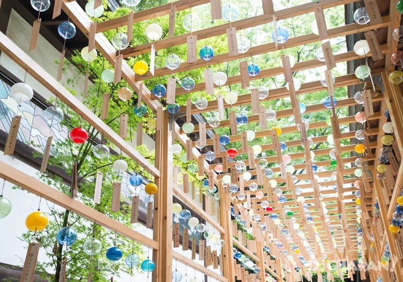
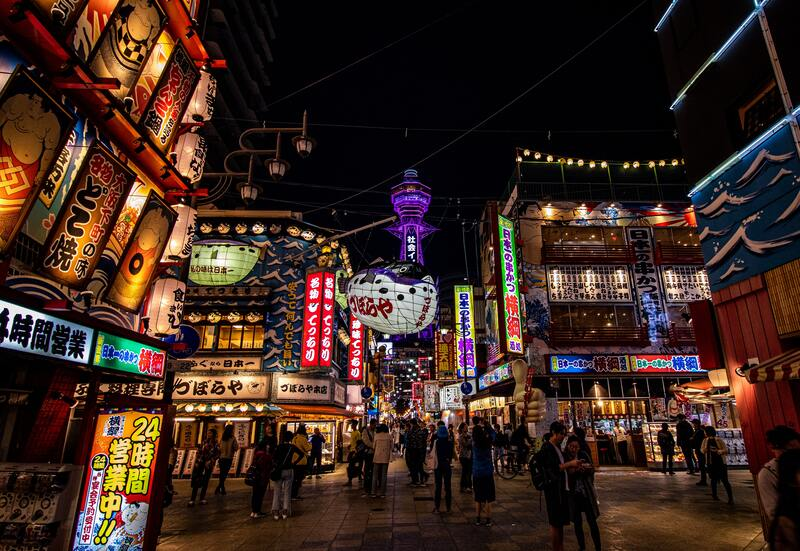
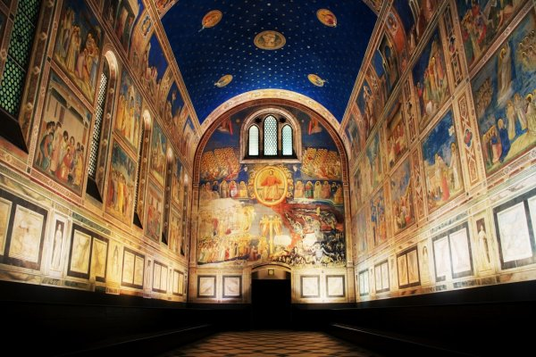

我的網站
Home
My Interests
畫畫
音樂
遊戲
日本文化
Search
其他關於日本文化的興趣。（不過感覺更像雜談）
簡介
想去的日本景點
翻譯作品
為何我特別挑日本文化來講呢？
因為從小我最常接觸的就是日本文化。
像是動漫、漫畫、歌曲、遊戲、插畫等等。
所以我的興趣大多也在這個範圍。
目前正在自學日文N3，閒暇時還會練習翻譯之類的。
夢想（之一）是去日本自由行。
富士山
大洗磯前神社

川越冰川神社
東京迪士尼
合掌村
京都

大阪

大塚國際美屬館
秋葉原
這裡收錄了我空閒時翻譯的作品。
除了TED影片外都是純粹練習，
皆未正式發布，也請不要任意散布，謝謝。
1. 《地縛少年花子君》相關
Twitter推文翻譯-怪異偵探事務所
Twitter推文翻譯-情人節
2. TED翻譯志工
作品一覽